Generating an Extended EMF Model
Summary
This tutorial is a follow-on to the tutorial "Generating an EMF
Model" in which a simple "library" model is generated. In that
tutorial, we showed how an EMF model can be generated very easily
from a Rose model or a set of Java interface files. In this
tutorial, we will show you how an extended EMF model, one that
extends an existing model, can be generated.
First of all, let us review what the "library" model
contains:
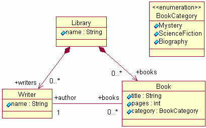
We are now going to extend this "library" model by creating a
new package called "schoollibrary". The "schoollibrary" package
contains three classes, two of which extend classes in the
"library" model:
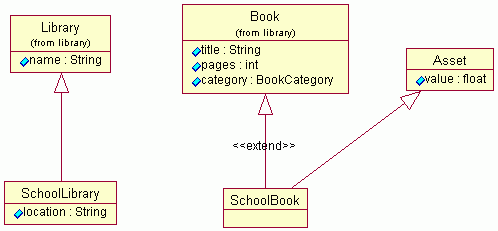
This tutorial will show you step-by-step how to generate an EMF
model of this "schoollibrary" package using the existing "library"
model. As in the previous tutorial, we will demonstrate creating
this new model from a Rose model and from a set of Java
interfaces.
The screenshots are based on version 3.0M9 of the Eclipse SDK and
version 2.0.0 (build I200405200923) of the combined EMF, SDO, XSD SDKs.
Last update: May 31, 2004.
Contents
contents
Step 0: Prerequisites
You have generated the library model as well as its editor in an
Eclipse workspace following the instructions in the tutorial "Generating an EMF
Model".
- Launch Eclipse and verify that these three projects are shown
in the Navigator view in the Resource perspective: "library",
"library.edit", and "library.editor".

- If these packages are not listed, see the Appendix for how to recreate them (if you want to skip the above tutorial).
contents
Step 1a: Creating a New EMF Model from a Rose Model
Save the Rose model file schoollibrary.mdl somewhere
on your workstation, say, d:\tmp\lib. It contains both the
"library" and "schoollibrary" packages:
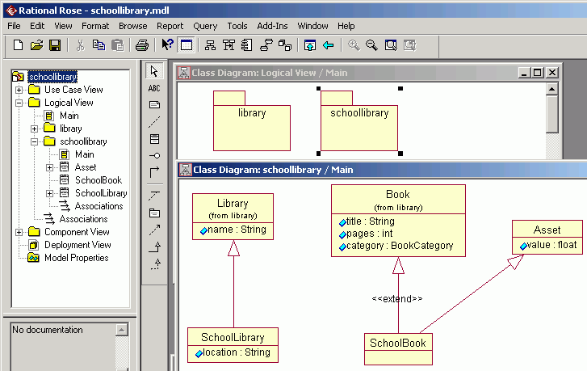
We should really place each of the packages in a separate ".cat"
file and reference them in the ".mdl" file. This would enable the
packages to be shared by various models. However, this is not the
key for this tutorial, we have duplicated the "library" package in
the previous tutorial in the "schoollibrary" model. The generator
behaves exactly the same whether the package is contained inside
the same ".mdl" file or referenced in an external ".cat"
file.
The following steps will create a new EMF model project in the
workspace:
- Select "File/New/Project..." to bring up the New Project
dialog.
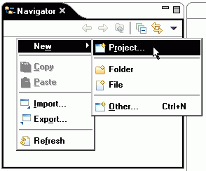
- Select "Eclipse Modeling Framework" and then "EMF Project".
Click the "Next" button.
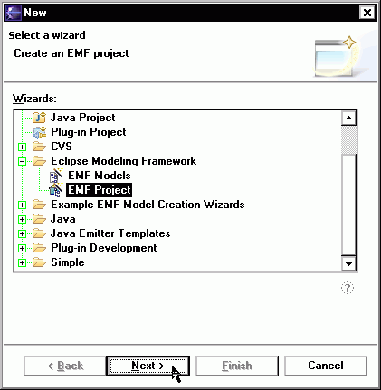
- Give the project a name (for example, "schoollibrary"), and
then click the "Next" button.
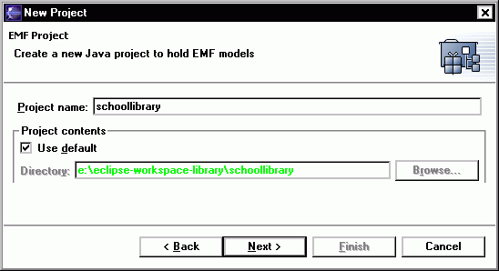
- Select "Load from a Rose model" and click the "Next"
button.
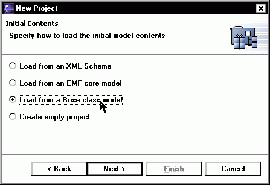
- Click on the "Browse" button and use the file dialog to locate
the Rose model file. EMF will examine the Rose model file and suggest a default
GenModel name. You can change the name in the entry field if you
wish. Click the "Next" button to begin creating packages.
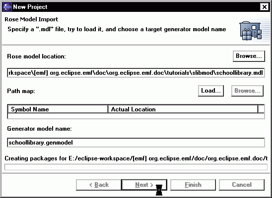
- The Rose model contains two packages, "library" and
"schoollibrary". Select "schoollibrary". It is the model we want to
generate. We want to reuse the existing "library" model, so we
don't check the "library" package. However, because "schoollibrary"
references the "library" model, we need to specify where to find
the "library" model. Click the "Browse" button.
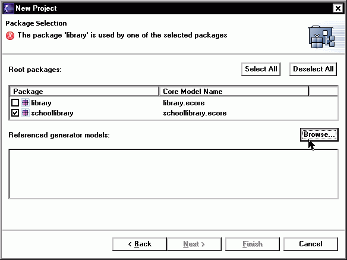
- EMF will search the workspace and locate all the models it can
find. Select the project and path where the "library.genmodel" is
found. Click the "OK" button.
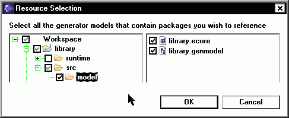
- Select the Library package (in the library's .genmodel tree)
that you want to reference. As soon as you select the "Library"
package, note that the error message disappears. Click the "Finish"
button.
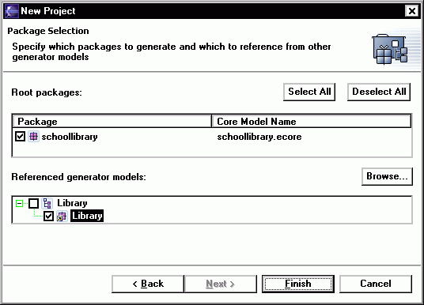
- An Ecore model and a GenModel will be created. The GenModel,
which controls code generation for the model, is opened in the main
view.
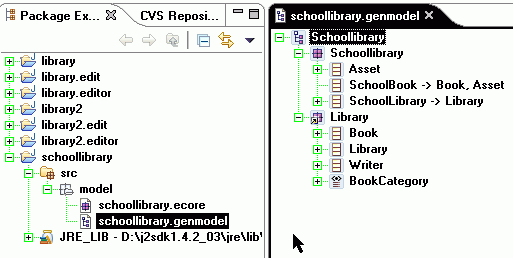
contents
Step 1b: Creating a New EMF Model from Java Interfaces
Here are the annotated Java interfaces for the "schoollibrary"
package. We can create the GenModel from these interface files
instead of a Rose model.
SchoolLibrary.java
package org.eclipse.example.schoollibrary;
import org.eclipse.example.library.Library;
/**
* @model
*/
public interface SchoolLibrary extends Library
{
/**
* @model
*/
String getLocation();
}
|
Asset.java
package org.eclipse.example.schoollibrary;
/**
* @model
*/
public interface Asset
{
/**
* @model
*/
float getValue();
}
|
SchoolBook.java
package org.eclipse.example.schoollibrary;
import org.eclipse.example.library.Book;
/**
* @model
*/
public interface SchoolBook extends Book, Asset
{
}
|
-
Create a Java Project
- Select "File/New/Project..." to bring up the New Project
dialog:
- Select "Java" and then "Java Project". Click the "Next"
button.
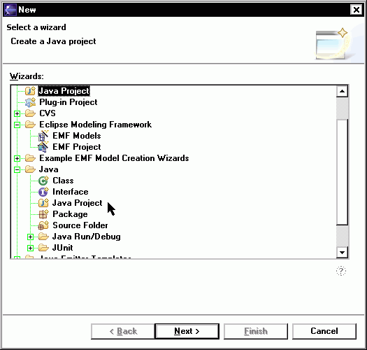
- Give the project a name, for example "schoollibrary", and click
the "Next" button.
- Select "Add Folder...", click on the "Create New Folder..."
button, and enter "src" as the name of the source folder.
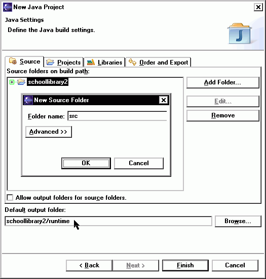
- You'll be
prompted to update the Build ouptut folder, click "Yes".

- Change the Default output folder to
"schoollibrary/runtime".
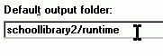
- Select the "Projects" tab and select the "library" project as a
dependent project.
- Click the "Finish" button and the "schoollibrary" project
should appear in the Package Explorer view.
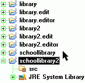
-
Import the Interfaces
You can create and type in the interfaces as in the previous
tutorial, but we will show here how to import them from the zip
file schoollibrary.zip.
- Save the above zip file in a directory on your workstation, say
"d:\tmp".
- Bring up the Import dialog, by selecting "File/Import..." (or right-click your Package Explorer).
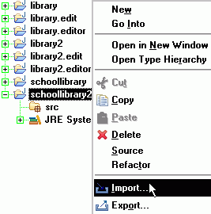
- Select "Zip file". Click the "Next" button.
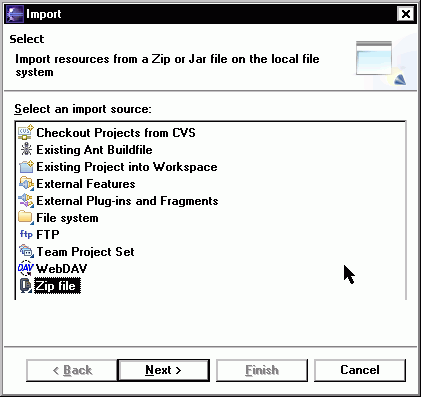
- Type in the zip file name or use the "Browse" button to bring
up a dialog to locate the zip file. You can then expand the
directory tree (hit the asterisk (*) on your keypad to expand all) and select the individual files in the zip file to
import. Select all the files (3) available. In the "Into folder:" input field, type in
"schoollibrary2/src" or locate it using the "Browse" button. Click
the "Finish" button.
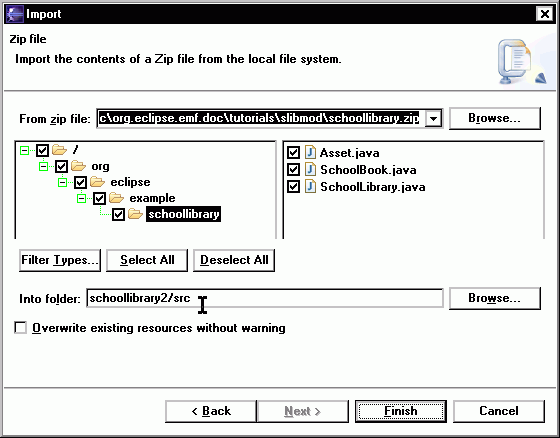
- Expand the "schoollibrary2" project and you will see that the
interface files were imported. It shows errors because the
"library" project it depends on has been fully generated and it
requires the EMF package in the Java Build Path to properly compile
the interfaces. Do not worry about the errors right now. Once the
EMF model is generated, the proper dependencies will be set up and
these errors will disappear.
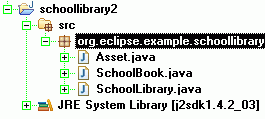
-
Create the Gen(erate) Model
- With the "schoollibrary2" project selected, right-click the "src" folder and select "New/Other..." from the pop-up menu (or just hit CTRL-N). Select "Eclipse Modeling Framework" and "EMF Models". Click the "Next" button.
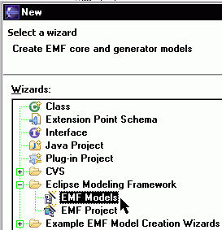
- Enter "schoollibrary2/src/model" as the name of the folder where
the genmodel will be generated and change the .genmodel name to
"schoollibrary2.genmodel". (This folder name and file name are used
so that the GenModel is generated in the same place as in the other
method using a Rose model.) Click the "Next" button.
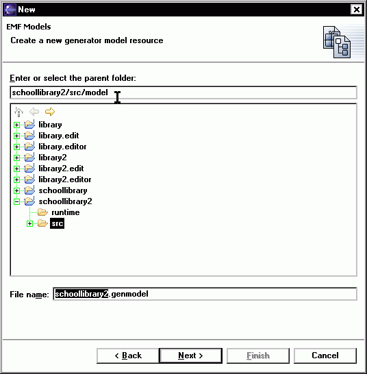
- Select "Load from Java annotations". Click the "Next"
button.
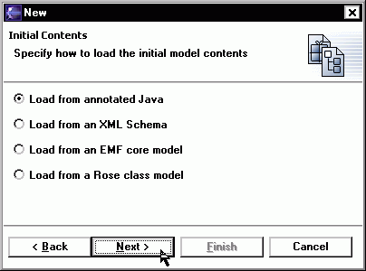
- Select schoollibrary package. Click the "Finish" button.
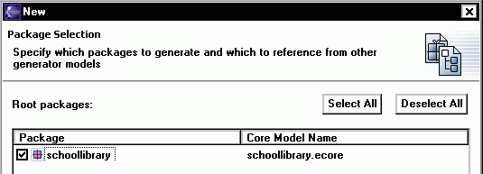
- An Ecore model and a GenModel will be created. The GenModel,
which controls code generation for the model, is opened in the main
view.
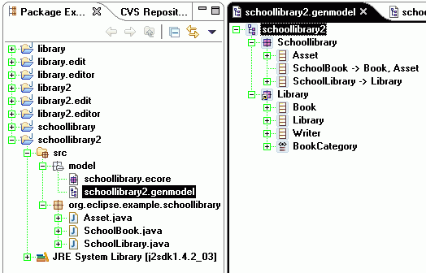
contents
Step 2: Generating the EMF Model and the Editor
The GenModel shows a root object, which represents the whole
model. The immediate children under the root object represent the
packages inside the model.
- The GenModel can be expanded to see its various elements. The
icon for the "Library" package has a superimposed arrow indicating
it is a reference to a package defined somewhere else.
- You can generate the model code and the editors for all the
packages in the GenModel in one step by right-clicking on the the
root element of the GenModel tree and selecting the "Generate All"
menu item. EMF will update the plugin.xml, the Java Build Path and
the dependent libraries for the plugin as well. No code for any
referenced model ("library" in this example) will be
generated.
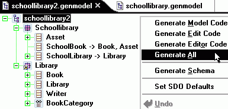
- The "schoollibrary.edit" and "schoollibrary.editor" (and "schoollibrary2.edit" and "schoollibrary2.editor", if you built both from Rose and Annotated Java) projects
should be generated and shown in the Navigator view if you are in
the Resource perspective (or in the Package Explorer view if you
are in the Java perspective.) The generated code will be compiled
and is ready to execute.
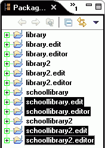
contents
Step 3: Running the Generated Editor
Before a run-time workbench instance can be run, a launch
configuration need to be setup.
- Switch to the Debug perspective and configure a launch
configuration as described in Step 4 of the
previous tutorial if it has not already been set up.
- Launch a run-time workbench instance, either from the
configuration dialog or the Run menu:
 or 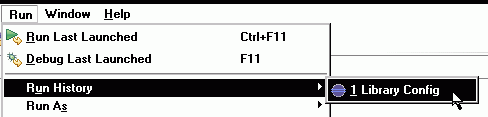
or 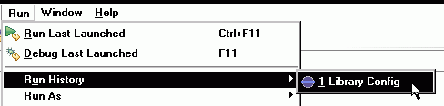
- Wait for the run-time workbench instance to come up. Bring up
the "Help/About Eclipse Platform" dialog, click on the "Plug-in
Details" button, and verify that the generated plugins are
loaded.
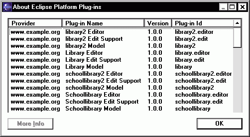
The school library model wizard can now be used to create a new
instance of the model.
- Bring up the "File/New/Project..." dialog and select "Simple"
followed by "Project". Give the project a name and click the
"Finish" button.
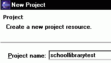
- Right-click the project and select "New/Other..." from the
pop-up menu. Select "Example EMF Model Creation Wizards" and "Schoollibrary
Model". Click the "Next" button.
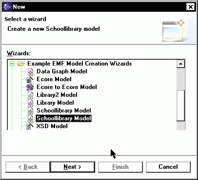
- Enter a file name for the "schoollibrary" model. Make sure it
ends with a ".schoollibrary" extension. Click the "Next"
button.
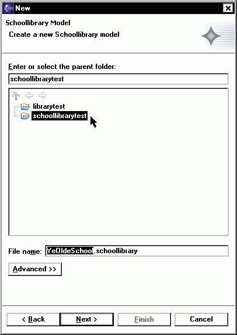
- Select "SchoolLibrary" as the root model object and click the
"Finish" button.
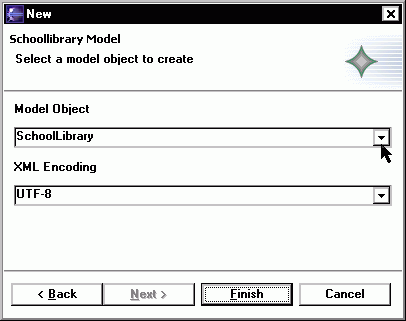
- The "My.schoollibrary" resource should open up in the
main window. Note that the root object is indeed a "School
Library". Enter some values for the "Location" and "Name"
attributes in the Properties view. Refer to the previous tutorial
or the manual on how to open the Properties view if it is not
already opened.
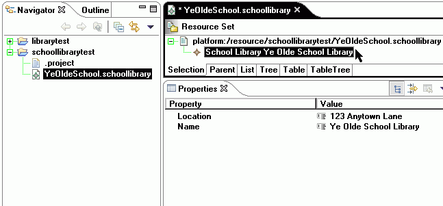
- Right-click on the School Library and select "New Child".
Notice that three kinds of objects can be created under a School
Library: "Writer", "Book", and "School Book". "Writer" and "Book"
are defined in the "library" package while "SchoolBook" is defined
in the "schoollibrary" package.
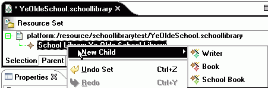
- Create a couple "Writer" objects, a "Book" object and a "School
Book" object. Notice that a "School Book" object inherits all the
attributes of a "Book" object plus one extra attribute ("value") as
we intended.
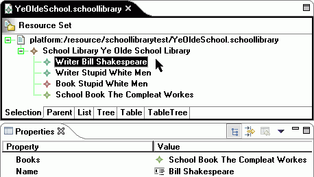
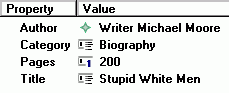
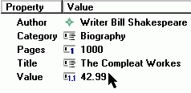
- Save the model. Note that unlike other editors, this one uses standard Windows Control-keys like CTRL-S for Save, CTRL-X for Cut, and CTRL-V for Paste, instead of CTRL-X-S for Save.
contents
Step 4: Modifying the Editor
This part of the tutorial will show you how you can change the
label in the generated editor in a number of ways.
Quit the run-time workbench instance and go back to the Resource
perspective of the original Eclipse workbench with the
"schoollibrary" genmodel.
- Select the "SchoolLibrary" item. In the Properties view, change
the "Label Feature" property to the attribute "location". This will
cause the value of the "location" attribute (instead of the "name"
attribute) to be displayed as the label to SchoolLibrary objects in
the editor. The default attribute to use for this value is the
attribute named "name" (or one that ends with "name") if it
exists.
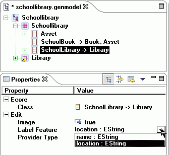
- To have the change take effect, we don't have to
re-generate all the classes. All we need to regenerate is the
provider class related to "SchoolLibrary". Save your changes (CTRL-X-S), then
right-click on "SchoolLibrary" and select "Generate Edit Code".
There is also no harm in re-generating all the classes - it just takes longer.
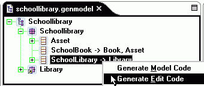
- You can examine the timestamps on the generated files to
satisfy yourself that indeed only "SchoolLibraryItemProvider.java"
was re-generated. The following table summarizes the files that
will be generated with the "Generate Model Code", "Generate Edit
Code" and "Generate Editor Code" menu items when you right-click on
the different objects. The "Generate All" menu item is equivalent
to selecting the three menu items together.
|
Generate Model Code
|
Generate Edit Code
|
Generate Editor Code
|
Model <M>
|
plugin.xml
<M>Plugin.java
(and files associated with each package in the model)
|
plugin.xml
plugin.properties
<M>EditPlugin.java
(and files associated with each package in the model)
|
plugin.xml
plugin.properties
<M>EditorPlugin.java
(and files associated with each package in the model)
|
Package <P>
|
<P>Package.java
<P>PackageImpl.java
<P>Factory.java
<P>FactoryImpl.java
<P>Switch.java
<P>AdaptorFactory.java
<P>ResourceImpl.java
<P>ResourceFactory.java
(and files associated with each Class and Enum in the
package)
|
<P>ItemProviderAdaptorFactory.java
(and files associated with each Class in the package)
|
<P>Editor.java
<P>ModelWizard.java
<P>ActionBarContributor.java
|
Class <C>
|
<C>.java
<C>Impl.java
|
<C>ItemProvider.java
|
|
Enum <E>
|
<E>.java
|
|
|
- Now you can switch to the Debug perspective and launch the
run-time workbench instance again. Open the "My.schoollibrary"
resource again if it was closed before. Expand the GenModel and
select the "School Library" object. You can see that the location
of the school library is shown in the label instead of its
name.
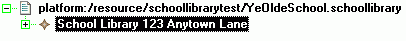
- Suppose that now you don't like the prefix "School Library" in
the label and want to get rid of it. The only way to do this is to
edit the code, but it is still quite simple to do. All the values
of the various properties that are displayed are supplied to the UI
code through the Item Providers. For text labels, they are supplied
through the "getText()" method in the Item Provider.
- Expand the "schoollibrary.edit" (or "schoollibrary2.edit") project, locate the
"SchoolLibraryItemProvider.java" file, and then open it..
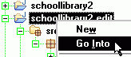
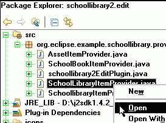
- Locate the "getText()" method in the Outline view and select
it. The cursor in the main window will then move to that
method.
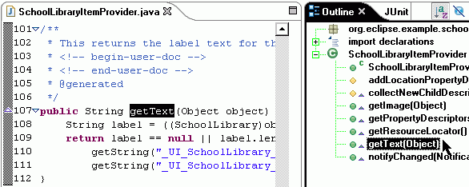
- Remove the string "School Library" in the return statement. In
order not to lose the change when the code is re-generated, the
"@generated" tag needs to be removed as well.
- Save the change, switch to the Debug perspective, launch the
run-time workbench instance and open "My.schoollibrary". You can
see the label for School Library now contains just the value of the
"location" attribute.
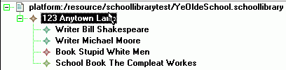
- In the above step, we have changed the original getText()
method. The "Label Feature" property on the "School Library" object
in the "schoollibrary.genmodel" now has no effect on the generated
code. This is because we have removed the "@generated" tag,
preventing it from being overwritten during code generation.
- Suppose that now you have not yet decided whether your School
Library editor will display the value of the location attribute or
the value of the name attribute. Instead, you want to be able to
change it from the .genmodel "Label Feature" attribute later.
However, you do not want the prefix "School Library" displayed in
the editor. Can this be achieved?
It can, but you need to write a little bit more code. Rename the
"getText()" method to "getTextGen()" (and keep the @generated tag)
and create a "getText()" method that will manipulate the string
returned by "getTextGen()" as follows:
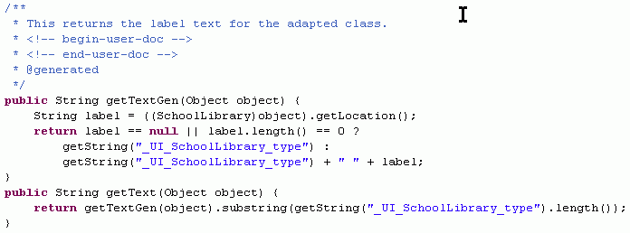
This is a feature of the codegen: When a method it is going to
generate already exists and does not have the "@generated" tag, it
will look for a method with the same name plus the suffix "Gen". If
the method exists and is tagged with "@generated", the content will
be generated into this method.
- To show you that the method is really re-generated, remove the
method body of getTextGen(), and replace it with a return ""; statement.
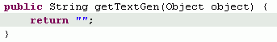
- Save the "SchoolLibraryItemProvider.java" file. Switch back to "schoollibrary.genmodel", select
"SchoolLibrary", and re-generate Edit code:
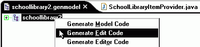
- Now, switch back to the "getTextGen()" method in
"SchoolLibraryItemProvider.java". It now has content and the nullstring return has been replaced with the generated code once more.
- You can go back to the "School Library" object in
"schoollibrary.genmodel" and change the "Label Feature" property,
regenerate the code and verify that the generated code does
indeed change according to the "Label Feature" property.
contents
Appendix: An Alternative Way of Generating the Model and
Editor
If you do not already have the base model "Library" and its
editor generated in separate projects, you can have both the
"Library" and "School Library" models generated into the same set
of projects. This can be done either through a Rose model or
through a set of Java interfaces.
-
Through Rose Model
- This method is the same as is described above, except that you should select both the "library" and "schoollibrary" packages, just before clicking the "Finish"
button.
-
Through Java Interfaces:
- This method is also very similar to the above described method, except that instead of creating the Project with a dependent "library" Project, you import the Library interfaces from the library.zip file (in addition to those imported from the schoollibrary.zip file), and when creating the EMF Models, you must select both packages to generate and to reference from other generator models.
- When you launch the second workspace to test your new model, expand
the model and right-click on the top-level "Library" object. Select
the "New Child" menu item and you will see three type of children
objects that can be created. Note that "School Book" is included,
even though it is in the "Library" package.
The "School Book" object is not available when the "Library" model
is generated on its own as in the previous tutorial because it does
not know about the existence of the "schoollibrary" package when
the model is being generated. Now when the base package and the
extended package are generated into the same project, they know
about each other. This feature occurs when multiple packages are
generated together.
contents